Object Detection
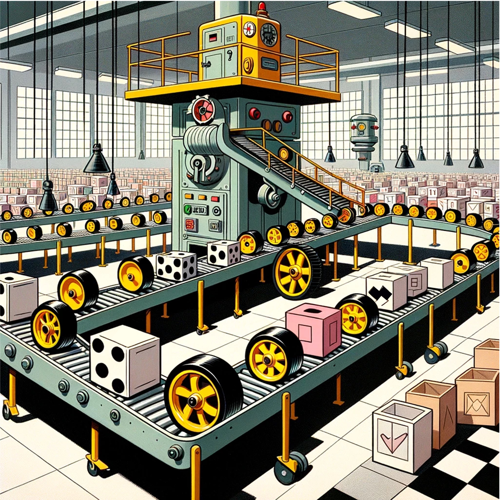
Introduction
This is a continuation of CV on Nicla Vision, now exploring Object Detection on microcontrollers.
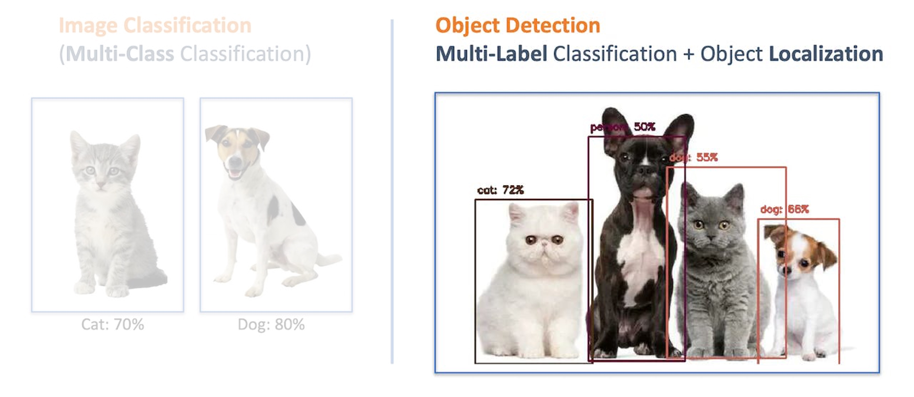
Object Detection versus Image Classification
The main task with Image Classification models is to produce a list of the most probable object categories present on an image, for example, to identify a tabby cat just after his dinner:
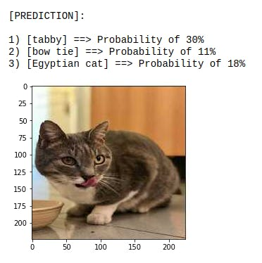
But what happens when the cat jumps near the wine glass? The model still only recognizes the predominant category on the image, the tabby cat:
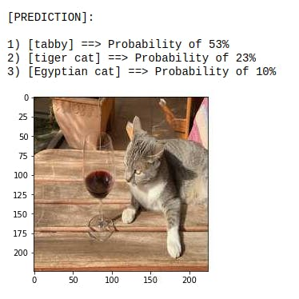
And what happens if there is not a dominant category on the image?
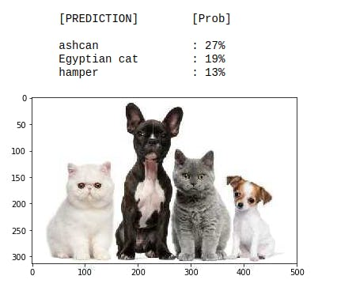
The model identifies the above image completely wrong as an “ashcan,” possibly due to the color tonalities.
The model used in all previous examples is the MobileNet, trained with a large dataset, the ImageNet.
To solve this issue, we need another type of model, where not only multiple categories (or labels) can be found but also where the objects are located on a given image.
As we can imagine, such models are much more complicated and bigger, for example, the MobileNetV2 SSD FPN-Lite 320x320, trained with the COCO dataset. This pre-trained object detection model is designed to locate up to 10 objects within an image, outputting a bounding box for each object detected. The below image is the result of such a model running on a Raspberry Pi:
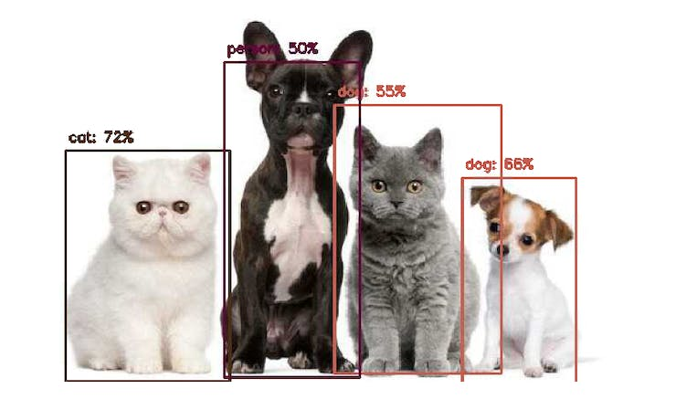
Those models used for Object detection (such as the MobileNet SSD or YOLO) usually have several MB in size, which is OK for use with Raspberry Pi but unsuitable for use with embedded devices, where the RAM usually is lower than 1M Bytes.
An innovative solution for Object Detection: FOMO
Edge Impulse launched in 2022, FOMO (Faster Objects, More Objects), a novel solution to perform object detection on embedded devices, not only on the Nicla Vision (Cortex M7) but also on Cortex M4F CPUs (Arduino Nano33 and OpenMV M4 series) as well the Espressif ESP32 devices (ESP-CAM and XIAO ESP32S3 Sense).
In this Hands-On exercise, we will explore using FOMO with Object Detection, not entering many details about the model itself. To understand more about how the model works, you can go into the official FOMO announcement by Edge Impulse, where Louis Moreau and Mat Kelcey explain in detail how it works.
The Object Detection Project Goal
All Machine Learning projects need to start with a detailed goal. Let’s assume we are in an industrial facility and must sort and count wheels and special boxes.
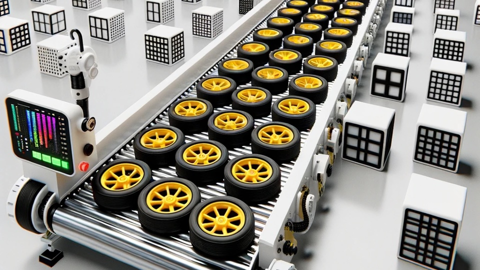
In other words, we should perform a multi-label classification, where each image can have three classes:
Background (No objects)
Box
Wheel
Here are some not labeled image samples that we should use to detect the objects (wheels and boxes):

We are interested in which object is in the image, its location (centroid), and how many we can find on it. The object’s size is not detected with FOMO, as with MobileNet SSD or YOLO, where the Bounding Box is one of the model outputs.
We will develop the project using the Nicla Vision for image capture and model inference. The ML project will be developed using the Edge Impulse Studio. But before starting the object detection project in the Studio, let’s create a raw dataset (not labeled) with images that contain the objects to be detected.
Data Collection
We can use the Edge Impulse Studio, the OpenMV IDE, your phone, or other devices for the image capture. Here, we will use again the OpenMV IDE for our purpose.
Collecting Dataset with OpenMV IDE
First, create in your computer a folder where your data will be saved, for example, “data.” Next, on the OpenMV IDE, go to Tools > Dataset Editor and select New Dataset to start the dataset collection:
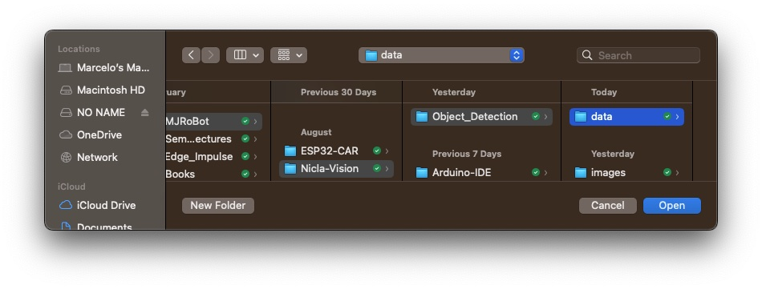
Edge impulse suggests that the objects should be of similar size and not overlapping for better performance. This is OK in an industrial facility, where the camera should be fixed, keeping the same distance from the objects to be detected. Despite that, we will also try with mixed sizes and positions to see the result.
We will not create separate folders for our images because each contains multiple labels.
Connect the Nicla Vision to the OpenMV IDE and run the dataset_capture_script.py. Clicking on the Capture Image button will start capturing images:
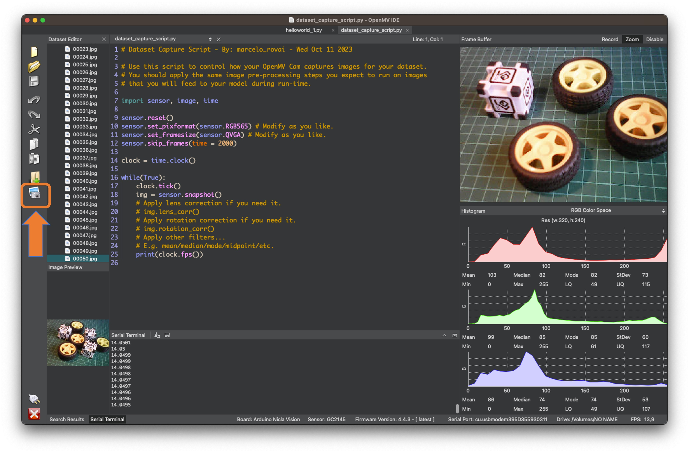
We suggest around 50 images mixing the objects and varying the number of each appearing on the scene. Try to capture different angles, backgrounds, and light conditions.
The stored images use a QVGA frame size 320x240 and RGB565 (color pixel format).
After capturing your dataset, close the Dataset Editor Tool on the Tools > Dataset Editor.
Edge Impulse Studio
Setup the project
Go to Edge Impulse Studio, enter your credentials at Login (or create an account), and start a new project.
Here, you can clone the project developed for this hands-on: NICLA_Vision_Object_Detection.
On your Project Dashboard, go down and on Project info and select Bounding boxes (object detection) and Nicla Vision as your Target Device:
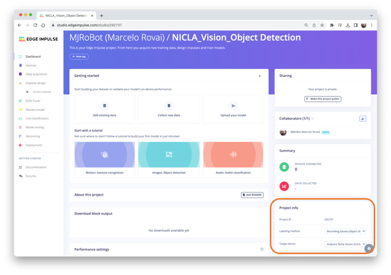
Uploading the unlabeled data
On Studio, go to the Data acquisition tab, and on the UPLOAD DATA section, upload from your computer files captured.
You can leave for the Studio to split your data automatically between Train and Test or do it manually.
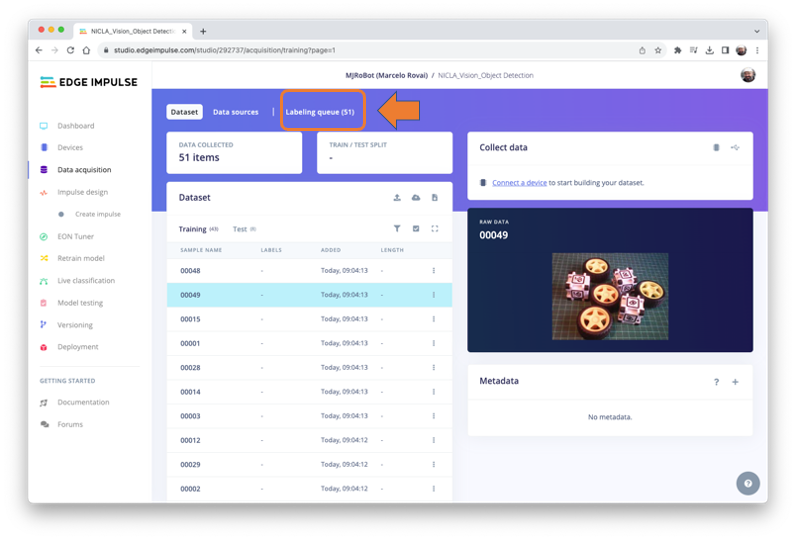
All the not labeled images (51) were uploaded but they still need to be labeled appropriately before using them as a dataset in the project. The Studio has a tool for that purpose, which you can find in the link Labeling queue (51).
There are two ways you can use to perform AI-assisted labeling on the Edge Impulse Studio (free version):
- Using yolov5
- Tracking objects between frames
Edge Impulse launched an auto-labeling feature for Enterprise customers, easing labeling tasks in object detection projects.
Ordinary objects can quickly be identified and labeled using an existing library of pre-trained object detection models from YOLOv5 (trained with the COCO dataset). But since, in our case, the objects are not part of COCO datasets, we should select the option of tracking objects. With this option, once you draw bounding boxes and label the images in one frame, the objects will be tracked automatically from frame to frame, partially labeling the new ones (not all are correctly labeled).
You can use the EI uploader to import your data if you already have a labeled dataset containing bounding boxes.
Labeling the Dataset
Starting with the first image of your unlabeled data, use your mouse to drag a box around an object to add a label. Then click Save labels to advance to the next item.
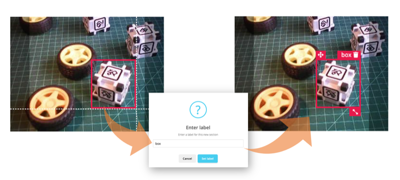
Continue with this process until the queue is empty. At the end, all images should have the objects labeled as those samples below:

Next, review the labeled samples on the Data acquisition tab. If one of the labels was wrong, you can edit it using the three dots menu after the sample name:
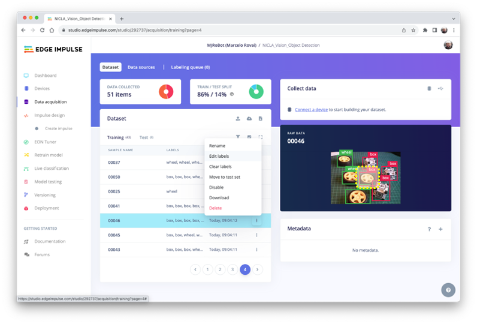
You will be guided to replace the wrong label, correcting the dataset.
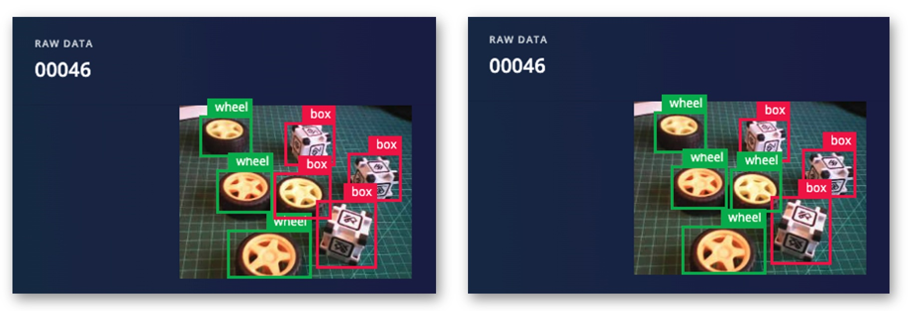
The Impulse Design
In this phase, you should define how to:
Pre-processing consists of resizing the individual images from
320 x 240to96 x 96and squashing them (squared form, without cropping). Afterwards, the images are converted from RGB to Grayscale.Design a Model, in this case, “Object Detection.”
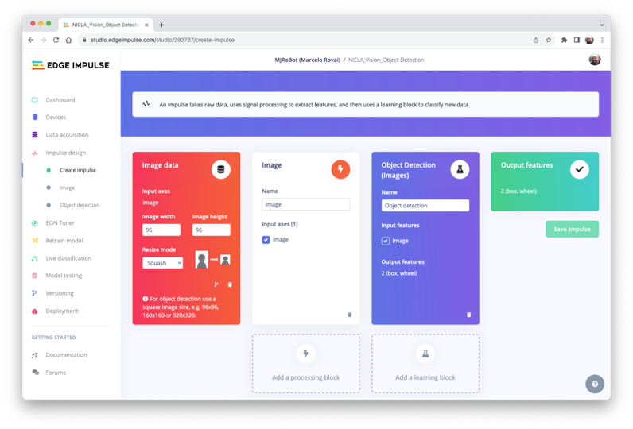
Preprocessing all dataset
In this section, select Color depth as Grayscale, which is suitable for use with FOMO models and Save parameters.

The Studio moves automatically to the next section, Generate features, where all samples will be pre-processed, resulting in a dataset with individual 96x96x1 images or 9,216 features.

The feature explorer shows that all samples evidence a good separation after the feature generation.
One of the samples (46) apparently is in the wrong space, but clicking on it can confirm that the labeling is correct.
Model Design, Training, and Test
We will use FOMO, an object detection model based on MobileNetV2 (alpha 0.35) designed to coarsely segment an image into a grid of background vs objects of interest (here, boxes and wheels).
FOMO is an innovative machine learning model for object detection, which can use up to 30 times less energy and memory than traditional models like Mobilenet SSD and YOLOv5. FOMO can operate on microcontrollers with less than 200 KB of RAM. The main reason this is possible is that while other models calculate the object’s size by drawing a square around it (bounding box), FOMO ignores the size of the image, providing only the information about where the object is located in the image, by means of its centroid coordinates.
How FOMO works?
FOMO takes the image in grayscale and divides it into blocks of pixels using a factor of 8. For the input of 96x96, the grid would be 12x12 (96/8=12). Next, FOMO will run a classifier through each pixel block to calculate the probability that there is a box or a wheel in each of them and, subsequently, determine the regions which have the highest probability of containing the object (If a pixel block has no objects, it will be classified as background). From the overlap of the final region, the FOMO provides the coordinates (related to the image dimensions) of the centroid of this region.

For training, we should select a pre-trained model. Let’s use the FOMO (Faster Objects, More Objects) MobileNetV2 0.35`. This model uses around 250KB RAM and 80KB of ROM (Flash), which suits well with our board since it has 1MB of RAM and ROM.

Regarding the training hyper-parameters, the model will be trained with:
- Epochs: 60,
- Batch size: 32
- Learning Rate: 0.001.
For validation during training, 20% of the dataset (validation_dataset) will be spared. For the remaining 80% (train_dataset), we will apply Data Augmentation, which will randomly flip, change the size and brightness of the image, and crop them, artificially increasing the number of samples on the dataset for training.
As a result, the model ends with practically 1.00 in the F1 score, with a similar result when using the Test data.
Note that FOMO automatically added a 3rd label background to the two previously defined (box and wheel).
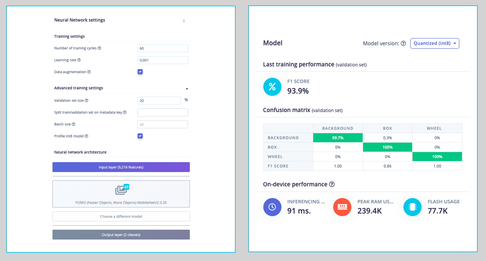
In object detection tasks, accuracy is generally not the primary evaluation metric. Object detection involves classifying objects and providing bounding boxes around them, making it a more complex problem than simple classification. The issue is that we do not have the bounding box, only the centroids. In short, using accuracy as a metric could be misleading and may not provide a complete understanding of how well the model is performing. Because of that, we will use the F1 score.
Test model with “Live Classification”
Since Edge Impulse officially supports the Nicla Vision, let’s connect it to the Studio. For that, follow the steps:
Download the last EI Firmware and unzip it.
Open the zip file on your computer and select the uploader related to your OS:

Put the Nicla-Vision on Boot Mode, pressing the reset button twice.
Execute the specific batch code for your OS for uploading the binary (
arduino-nicla-vision.bin) to your board.
Go to Live classification section at EI Studio, and using webUSB, connect your Nicla Vision:
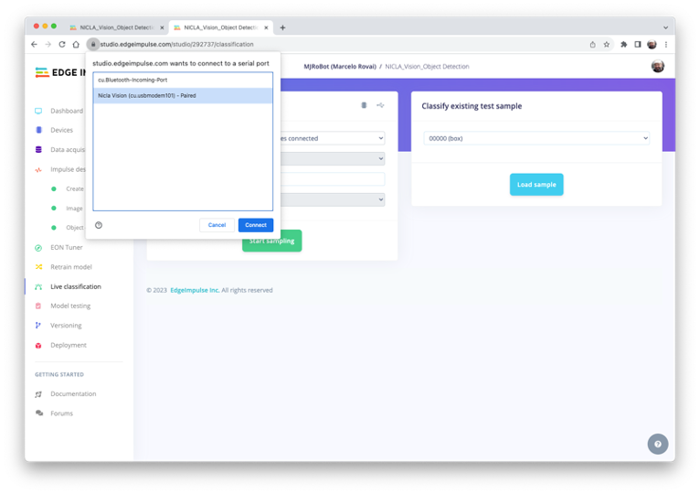
Once connected, you can use the Nicla to capture actual images to be tested by the trained model on Edge Impulse Studio.
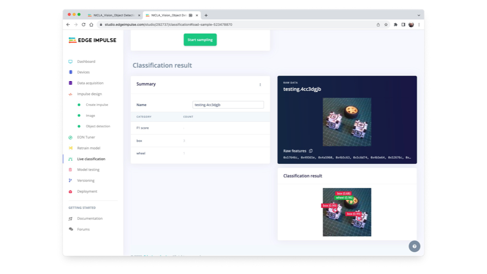
One thing to be noted is that the model can produce false positives and negatives. This can be minimized by defining a proper Confidence Threshold (use the Three dots menu for the set-up). Try with 0.8 or more.
Deploying the Model
Select OpenMV Firmware on the Deploy Tab and press [Build].
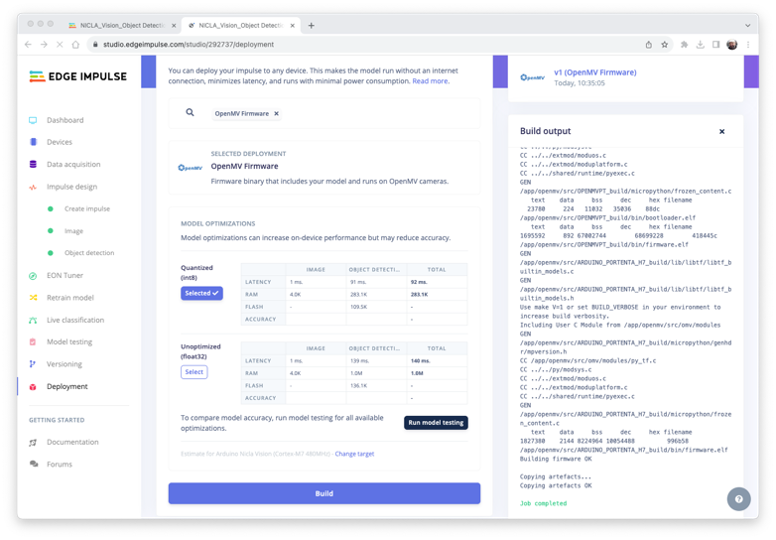
When you try to connect the Nicla with the OpenMV IDE again, it will try to update its FW. Choose the option Load a specific firmware instead.
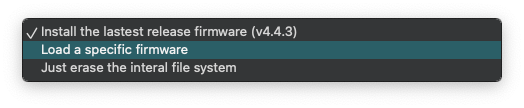
You will find a ZIP file on your computer from the Studio. Open it:
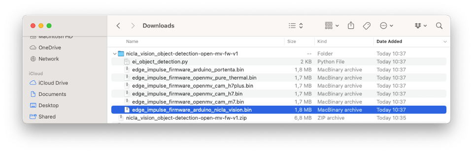
Load the .bin file to your board:
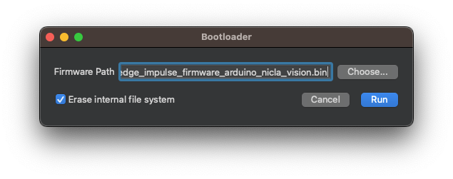
After the download is finished, a pop-up message will be displayed. Press OK, and open the script ei_object_detection.py downloaded from the Studio.
Before running the script, let’s change a few lines. Note that you can leave the window definition as 240 x 240 and the camera capturing images as QVGA/RGB. The captured image will be pre-processed by the FW deployed from Edge Impulse
# Edge Impulse - OpenMV Object Detection Example
import sensor, image, time, os, tf, math, uos, gc
sensor.reset() # Reset and initialize the sensor.
sensor.set_pixformat(sensor.RGB565) # Set pixel format to RGB565 (or GRAYSCALE)
sensor.set_framesize(sensor.QVGA) # Set frame size to QVGA (320x240)
sensor.set_windowing((240, 240)) # Set 240x240 window.
sensor.skip_frames(time=2000) # Let the camera adjust.
net = None
labels = NoneRedefine the minimum confidence, for example, to 0.8 to minimize false positives and negatives.
min_confidence = 0.8Change if necessary, the color of the circles that will be used to display the detected object’s centroid for a better contrast.
try:
# Load built in model
labels, net = tf.load_builtin_model('trained')
except Exception as e:
raise Exception(e)
colors = [ # Add more colors if you are detecting more than 7 types of classes at once.
(255, 255, 0), # background: yellow (not used)
( 0, 255, 0), # cube: green
(255, 0, 0), # wheel: red
( 0, 0, 255), # not used
(255, 0, 255), # not used
( 0, 255, 255), # not used
(255, 255, 255), # not used
]Keep the remaining code as it is and press the green Play button to run the code:
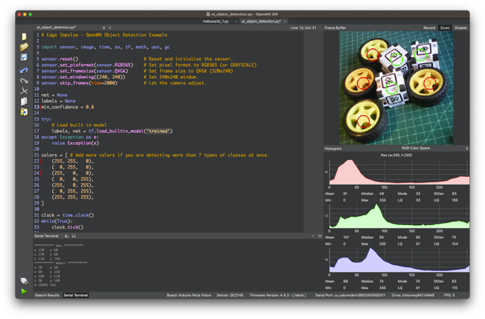
On the camera view, we can see the objects with their centroids marked with 12 pixel-fixed circles (each circle has a distinct color, depending on its class). On the Serial Terminal, the model shows the labels detected and their position on the image window (240X240).
Be ware that the coordinate origin is in the upper left corner.
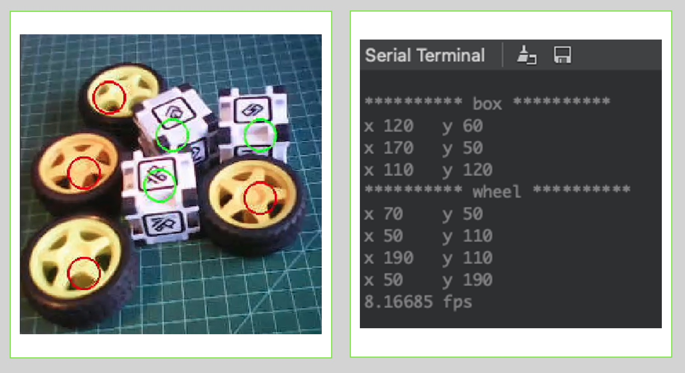
Note that the frames per second rate is around 8 fps (similar to what we got with the Image Classification project). This happens because FOMO is cleverly built over a CNN model, not with an object detection model like the SSD MobileNet. For example, when running a MobileNetV2 SSD FPN-Lite 320x320 model on a Raspberry Pi 4, the latency is around 5 times higher (around 1.5 fps)
Here is a short video showing the inference results:
Conclusion
FOMO is a significant leap in the image processing space, as Louis Moreau and Mat Kelcey put it during its launch in 2022:
FOMO is a ground-breaking algorithm that brings real-time object detection, tracking, and counting to microcontrollers for the first time.
Multiple possibilities exist for exploring object detection (and, more precisely, counting them) on embedded devices, for example, to explore the Nicla doing sensor fusion (camera + microphone) and object detection. This can be very useful on projects involving bees, for example.
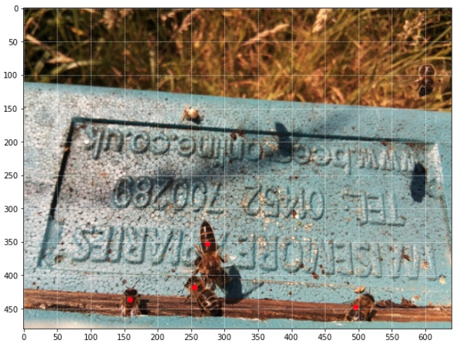